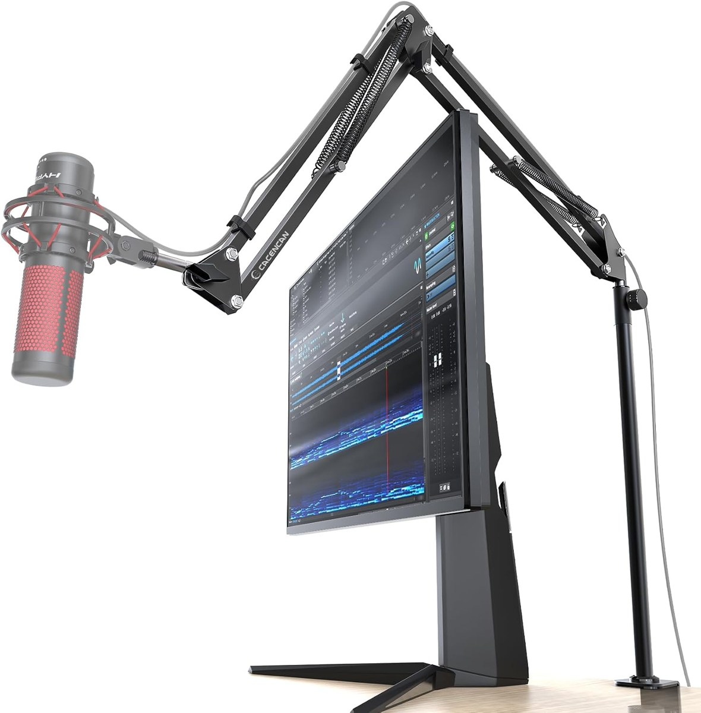
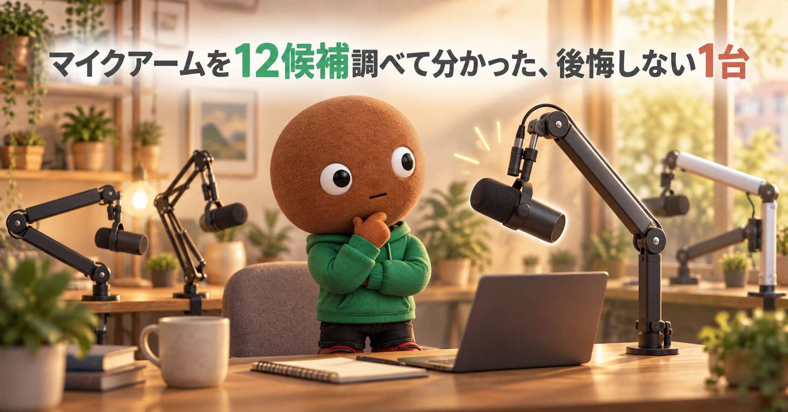
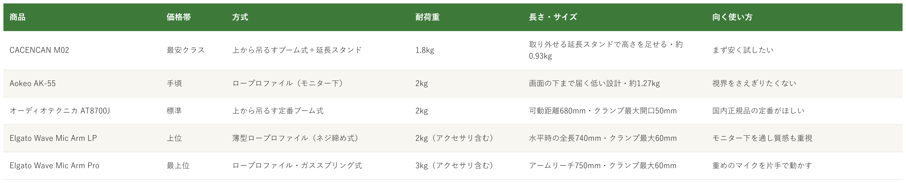

Amazonで見るマイクアームを選べず、方式・耐荷重・長さで買って後悔したくない人へ
そのマイクアーム、
方式と耐荷重で選んでいますか？
方式・耐荷重・長さ・価格帯まで、マイクアーム12候補を調査。方式と価格帯が重複しない5商品を比較しました。
自分に合うマイクアームを探す
この記事はAmazonアソシエイト・プログラムの参加者として、紹介料を得る場合があります（PR）。仕様は調査時点の情報です。
12候補から、選び方の違う5商品に絞りました。まずは気になる1つへ。向いている人・向いていない人と、低評価レビューもまとめています。
12候補を調査
5商品に厳選
低評価レビューも確認済み
結論から先に言うと：
方式・耐荷重・価格帯、何を優先するかで1つを。
横にスワイプして、5商品を見比べる
選び方の基準は3つ
調べてわかったのは、基準は3つでした。
1つ目は「耐荷重」。マイク本体だけでなく、ショックマウントやポップガードなどを付けた合計の重さで考えます。今回の5商品は、1.8kgから3kgまで幅があります。Elgatoの2商品は、耐荷重がマイクとアクセサリを含めた値です。
2つ目は「方式（上から吊るすか、モニター下を通すか）」。CACENCANとオーディオテクニカは、上から吊るすブーム式です。Aokeo・Elgato LP・Elgato Proは、モニターの下を通すロープロファイル型で、視界をさえぎりにくい設計です。
3つ目は「机への固定と、角度の固定のしかた」。クランプの最大開口は、オーディオテクニカが50mm、Elgatoの2商品が60mmです。CACENCANとAokeoは、今回の調査では数値を確認できませんでした。先端の角度固定は、ネジやつまみで締める商品が多く、Elgato Proだけがガススプリング式です。
比較表

価格帯・方式・耐荷重・長さ・向く使い方の比較（価格帯は最安クラス〜最上位の5段階。内容は商品ごとに異なります）
CACENCAN M02
- 最安クラス
- 上から吊るすブーム式・耐荷重1.8kg・約0.93kg
- 取り外せる延長スタンド付き、折りたたみ式
Aokeo AK-55
- 手頃
- ロープロファイル・耐荷重2kg・約1.27kg
- 画面の下まで届く低い設計、ケーブルをアーム底に固定
オーディオテクニカ AT8700J
- 標準
- 上から吊るす定番ブーム式・耐荷重2kg・可動距離680mm
- クランプ最大開口50mm、本体約1030g
Elgato Wave Mic Arm LP
- 上位
- 薄型ロープロファイル・耐荷重2kg（アクセサリ含む）・水平時の全長740mm
- 磁気式ケーブルカバー、クランプ最大60mm
Elgato Wave Mic Arm Pro
- 最上位
- ガススプリング式・耐荷重3kg（アクセサリ含む）・アームリーチ750mm
- マグネット式ケーブルホルダー、クランプ最大60mm
向いてる人
- 初めてのマイクアームを、できるだけ安く試したい人
- モニターより高い位置に、マイクを置きたい人
向いてない人
- 重めのマイクを使う人（耐荷重は1.8kgで、5商品の中で最も小さい）
- モニターの下にアームを通して、視界をすっきりさせたい人（上から吊るすタイプ）
選ぶ決め手まず安く、高さの出せるアームを試したいなら、一番ハードルの低い選択です。
低評価レビューを調べました
Amazonのレビューには、★4で、マイクの回転部分がネジ式固定なので、圧力で止める方式にしてほしかったという声がありました。別の★4には、説明書がもう少し分かりやすいとよかったという声もあります。
参考：Amazon商品ページのレビュー（★4）
CACENCANのM02は、
マイクアームをまず安く試したい人に
最適な1台です。
耐荷重は1.8kgで、
取り外し可能なスタンドで高さを足せます。
重さは約0.93kg、
折りたたみ式で、変換ネジと配線フックが付属します。
向いてる人
- モニターの手前をアームが横切るのが気になる人
- ロープロファイル型を、手頃な価格で試したい人
向いてない人
- 重めのマイクに、余裕を持たせたい人（耐荷重は2kg）
- ガススプリング式のような、片手での滑らかな位置決めを求める人（調節つまみで動きの硬さを合わせるタイプ）
選ぶ決め手モニター下を通すロープロファイルを、手頃に試したいなら有力な選択です。
低評価レビューを調べました
Amazonのレビューには、★4で、値段の割には丈夫だが、もっとしっかり固定できたら嬉しいという声がありました。★5のレビューの中にも、机に固定するパーツが細く、固定部分からマイクが離れると少しアームが傾くという指摘があります（机と固定パーツの間に鉄板を挟むと軽減できるという工夫も書かれていました）。
参考：Amazon商品ページのレビュー（★4、★5）
AokeoのAK-55は、
モニターの視界をさえぎらない
ロープロファイル型を試したい人に最適な1台です。
耐荷重は2kgで、
アームは画面の下まで伸びる低い設計です。
重さは約1.27kg、
ケーブルはアームの底に隠して固定できます。
向いてる人
- AT2020など、耐荷重2kgまでのコンデンサーマイクを使う人
- 配信や収録用に、上から吊るす定番のアームがほしい人
向いてない人
- モニターの下にアームを通したい人（上から吊るすタイプ）
- 先端の角度固定を、ネジに頼りたくない人（レビューに指摘あり）
選ぶ決め手仕様が公式に明記され、レビュー件数も多い定番です。外したくない人向けの選択です。
低評価レビューを調べました
Amazonのレビューには、★3で、動きがやや硬く、マイクとの連結部の留め具がネジ式なので重いと下がりそうという声がありました。★4には、マイク取付部のネジが弱めで、AT2035を地面と平行には固定できなかったという声と、クランプの後ろネジが出っ張っていて、頻繁に伸ばしたり畳んだりすると土台が動くという声があります。
参考：Amazon商品ページのレビュー（★3、★4）
オーディオテクニカのAT8700Jは、
国内正規品の定番ブームアームを
選びたい人に最適な1台です。
耐荷重は2kg、可動距離は680mm、
クランプは最大50mmまで開きます。
重さは本体約1030g、
折りたたむと外形430×398mmです。
向いてる人
- 大きな机やモニターの下に、アームを通したい人
- ケーブルを、アームの中にまとめたい人
向いてない人
- 先端や関節の固定を、ネジ締めに頼りたくない人
- 2kgを超える重いマイクを使う人（耐荷重はアクセサリ込みで2kg）
選ぶ決め手見た目と質感も含めて、モニター下を通すロープロファイルを選びたいなら、基本になる1台です。
低評価レビューを調べました
Amazonのレビューには、★3で、ネジ締めタイプなので徐々にネジが弱っていくのを感じ、冬場の朝にアームが降りているのを確認したという指摘がありました（3人が参考になったと評価）。
参考：Amazon商品ページのレビュー（★3）
ElgatoのWave Mic Arm LPは、
モニター下をすっきり通して使いたい人に
最適な1台です。
水平時の全長は740mm、
耐荷重はアクセサリ込みで2kgです。
クランプは最大60mm、
磁気式カバーでケーブルを隠せます。
向いてる人
- 毎日、マイクの位置を動かす人
- Shure SM7Bなど、重めのマイクを使う人（商品名で対応をうたっています）
向いてない人
- マイクアームを手頃な価格で試したい人（5商品の中で最上位の価格帯）
- 机の下に、クランプが張り出すと困る人（レビューに指摘あり）
選ぶ決め手毎日動かす・重めのマイク・滑らかさを優先するなら、ここまで出す理由が一番はっきりした1台です。
低評価レビューを調べました
Amazonのレビューには、★3で、先端の角度固定はLPと同じツマミなので、SM7Bのような重いマイクにポップフィルターなどを付けて水平や上向きにすると垂れてくるという指摘がありました（3人が参考になったと評価）。★4には、クランプが机の下に大きく張り出すため、ケーブルトレーや引き出しのある天板だと干渉する場合があるという声もあります。
参考：Amazon商品ページのレビュー（★3、★4）
ElgatoのWave Mic Arm Proは、
重めのマイクも片手で位置を決めたい人に
最適な1台です。
ガススプリング式で、
耐荷重はアクセサリ込みで3kgです。
クランプは最大60mm、
アームリーチは750mmです。
12候補をどう絞った？ 調査の経緯を見る
マイクアームは、方式・耐荷重・長さ・クランプの対応と選択肢が多く、「安いものを買ったらマイクが垂れてきた」「モニターの上にアームが来て視界をふさいだ」というギャップが起きやすい道具です。正直どれを選べばいいのか迷います。
なので今回、机にクランプで固定するマイクアーム（ブームアーム）の仕様を調べて比較しました。各商品ごとに、向いてる人・向いてない人も調べているので、自分に合う1つを探してみてください。マイク本体の比較ではなく、アームだけを対象にしています。
12候補から5つに絞り込みました
マイクアームは、Amazonの検索結果と、メーカー・販売店の商品ページを中心に調べました。今回はCACENCAN M02・KTSOUL マイクアーム・Aokeo AK-55・FIFINE BM88・GRAPHT ロープロファイルマイクアーム・オーディオテクニカ AT8700J・オーディオテクニカ AT8705・Elgato Wave Mic Arm LP・Elgato Wave Mic Arm Pro・MAONO マイクアーム・Novonest マイクスタンド固定クランプ・サンワサプライ 100-MCST001の12候補を調べ、方式・耐荷重・価格帯が重複しないよう5商品に絞りました。
採用したのはCACENCAN M02（上から吊るす・延長スタンド付き）、Aokeo AK-55（ロープロファイル）、オーディオテクニカ AT8700J（定番のブームアーム）、Elgato Wave Mic Arm LP（薄型）、Elgato Wave Mic Arm Pro（ガススプリング式）の5つです。
見送ったのは、採用した商品と方式や価格帯が重なるものです。FIFINE BM88とGRAPHTは、Aokeoと同じロープロファイル型で耐荷重の差も小さいため、手頃な1台にAokeoを選びました。オーディオテクニカのAT8705は、AT8700Jと同じメーカーの上位モデルのため、AT8700Jに絞りました。KTSOULとMAONOは、商品ページで耐荷重などの数値を確認しきれませんでした。Novonestはアーム単体ではなく固定用クランプの商品名で、比較の対象が違うため外しました。サンワサプライの100-MCST001は、Amazonの販売ページを今回は確認しておらず、見送りました。
低評価の商品も見ました
5商品それぞれについて、Amazon商品ページに載っている★3〜★4前後のレビューを確認しました。個別レビューの真偽までは検証できないため、確認できた範囲の傾向としてまとめています。WebSearchでは、各商品の低評価を独立して検証した記事までは見つかりませんでした。
確認できた指摘は、CACENCANの回転部分がネジ式であること、Aokeoの固定のしっかり感と机に固定するパーツの細さ、オーディオテクニカの先端のネジが弱めという声と土台の動き、Elgato LPのネジが徐々に弱るという声、Elgato Proの重いマイクで先端のツマミが垂れてくるという声とクランプの張り出しです。
調べてみて驚いたこと
耐荷重は、5商品のうち4商品が1.8kg〜2kgで、3kgなのはElgato Proだけでした。ElgatoはLP・Proとも、耐荷重がマイクだけでなくアクセサリを含めた値です。ショックマウントやポップガードを付けるなら、その分も足して考える必要があります。
また、先端の角度固定についての指摘は、CACENCAN・オーディオテクニカ・Elgato LP・Elgato Proの4商品のレビューで見つかり、Aokeoにも固定のしっかり感を望む声がありました。ガススプリング式の最上位のProでも、先端はツマミ固定のため、重いマイクでは垂れてくるという声がありました。
つまり、価格帯が上がるほど安心という話ではなく、「方式」と「耐荷重に余裕があるか」で選ぶのが大事だと分かりました。
迷ったらこれ
ここまで読んでも迷ったら、仕様がメーカー公式に明記され、Amazonのレビュー件数も多い（評価4.4）オーディオテクニカ AT8700Jが、一番外しにくいと考えます。モニターの下を通したいなら、手頃なAokeo AK-55か、質感重視のElgato LPが選択肢です。
Amazonで見る→よくある質問
Q. マイクアームは、何kgまで耐えられるものを選べばいいですか。
A. マイク本体に、ショックマウントやポップガードを足した合計の重さで考えます。今回の5商品の耐荷重は、CACENCANが1.8kg、Aokeoとオーディオテクニカが2kg、Elgato LPが2kg（アクセサリ含む）、Elgato Proが3kg（アクセサリ含む）です。手持ちのマイクの重さは、商品ページで確認してください。
Q. ロープロファイル型とは何ですか。
A. アームを低い位置に通し、モニターの下からマイクを口元へ持ってくるタイプです。Aokeoは画面の下まで伸びる設計、Elgato LPは肩のラインより下に収まる薄型と説明されています。上から吊るすブーム式は、CACENCANとオーディオテクニカです。
Q. 机の厚みは、どこまで対応していますか。
A. オーディオテクニカのAT8700Jはクランプ最大開口50mm、Elgato LPとProは最大60mmです。CACENCANとAokeoは今回の調査では数値を確認できなかったため、購入前に商品ページで確認してください。
Q. USBマイクにも使えますか。
A. マイク側のネジ径が合えば使えます。CACENCANは3/8-5/8インチの変換ネジ付き、Aokeoは3/8→1/4と3/8→5/8インチの変換アダプター付き、オーディオテクニカは5/8インチねじ、ElgatoのLPは1/4・3/8・5/8インチ対応と説明されています。マイク本体の選び方はUSBマイクの記事にまとめています。
Q. ガススプリング式は、ほかの方式と何が違いますか。
A. Elgato Proはガススプリング式で、ネジを回さずに位置を調整できます。Elgato LPのレビューには「ネジ締めタイプ」という記述があり、オーディオテクニカも先端の留め具をネジで締める方式です。ただし、Proでも先端の角度固定はツマミ式という指摘がレビューにありました。
こんな記事も書いてます
ミートボーの調査部屋で他の記事も見る（全本）


出典
- オーディオテクニカ AT8700J 公式：audio-technica.co.jp
- Elgato Wave Mic Arm Pro 公式：elgato.com
- Elgato Wave Mic Arm LP 仕様（ツクモ）：shop.tsukumo.co.jp
- Amazon.co.jp CACENCAN M02：amazon.co.jp
- Amazon.co.jp Aokeo AK-55：amazon.co.jp
- Amazon.co.jp オーディオテクニカ AT8700J：amazon.co.jp
- Amazon.co.jp Elgato Wave Mic Arm LP：amazon.co.jp
- Amazon.co.jp Elgato Wave Mic Arm Pro：amazon.co.jp